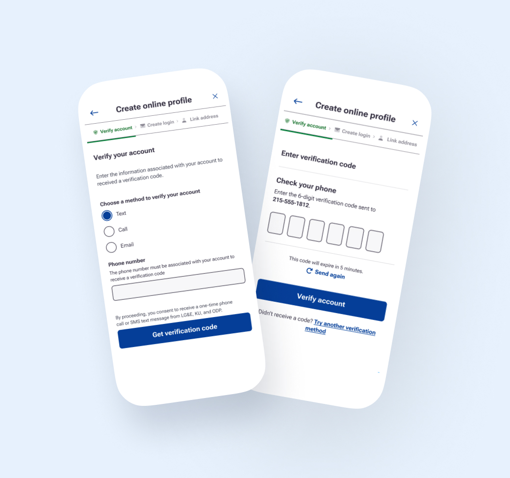

Challenge
Three companies. Zero shared standards.
A Fortune 500 energy provider was consolidating multiple utility companies into one organization. Each operated with different systems, language, and design standards — creating real risks for inconsistent and confusing customer experiences at scale.
Our audit uncovered four critical issues standing in the way.
⏱
Outdated interfaces slowed users down and created friction at every step
❓
Inconsistent language created uncertainty and eroded customer trust
⚙️
Design systems varied widely across teams with no shared patterns
📋
Documentation and governance were limited or entirely absent
Before state — fragmented experiences
Three utilities. Three completely different interfaces.
Each utility had its own visual language, component library, and content patterns — none of which spoke to each other.
Process
Audit. Align. Systematize.
We combined UX design, content strategy, and cross-functional collaboration — building standards that were scalable and easy for teams to adopt and maintain over time.
01
Full experience audit
Mapped all existing digital experiences across 3 utility companies, identifying inconsistencies in UI patterns, terminology, and workflow logic.
02
Align on shared principles
Ran cross-functional workshops to align stakeholders and design teams around clarity, guidance, and consistency as core principles for all customer-facing experiences.
03
Design & component build
Redesigned key task flows, built reusable Figma components, updated typography and spacing, and applied WCAG-compliant accessibility patterns throughout.
04
Governance & documentation
Built the UX Writing Guidelines and Content Library — a living source-of-truth with standardized patterns, component examples, and rules for consistent behavior across utilities.
Project timeline · 6 months
Month 1–2
Discover
Audit, interviews, friction mapping
Month 2–3
Define
Principles, content strategy, IA
Month 3–5
Design
Components, flows, copy, a11y
Month 5–6
Deliver
Docs, governance, handoff
The Solution
From fragmented to unified — at scale
We transformed inconsistent interfaces into a guided, scalable experience supported by unified UX copy, reusable components, and documented standards across four workstreams.
Intuitive user experience
Streamlined flows with clear step-by-step guidance
Simplified complex workflows, reduced cognitive load through clear hierarchy, and improved flow logic so users move through tasks with confidence.
Streamlined task flows with progress indicators and breadcrumbs
Consistent hierarchy and spacing across all utilities
Improved flow logic — clear next steps, fewer dead ends

Design system — unified components
One component library. Three utilities. Zero inconsistency.
Reusable Figma components with documented usage rules, accessible color tokens, and standardized spacing across all platforms.
Impact
What this work made possible
Enabled clearer, more guided task flows for customers across all three utilities
Aligned teams around a shared design and content language for the first time
Created scalable UX standards across products and platforms — web, mobile, and IVR
Put governance in place to support consistency as the organization continues to evolve
Design system adopted across 6+ product teams — significantly reducing design-to-dev friction
Takeaway
Systems over screens
Rather than solving isolated UX issues, this work addressed the systemic challenges of scale, alignment, and consistency. By defining shared patterns, language, and governance, the project enabled teams to build with confidence — and gave customers a coherent experience regardless of which utility they came from.
This is the kind of design work I find most meaningful: not just making something look better, but building the foundation that makes everything better.
☕
Want to know more?
I'd love to walk you through the full story — the real work is richer than any case study page can show.
Connect on LinkedIn →
Next case study
Turning Mission Into Momentum — Food Equity Nonprofit
UX Design · Content Strategy
→